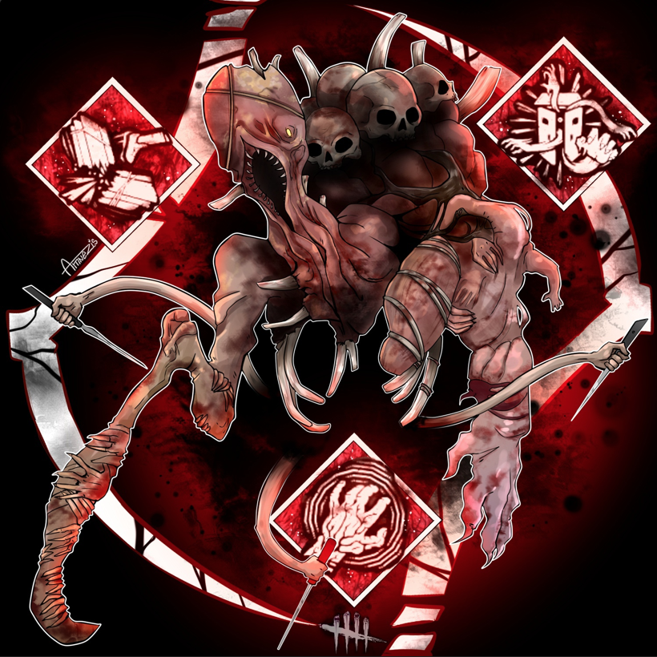
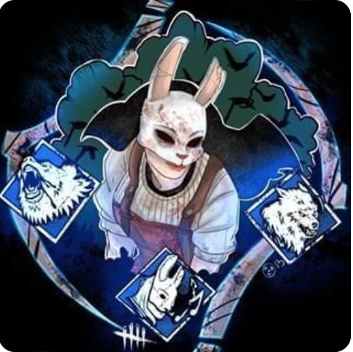

1 / 26
Artist
Type: Tracker


Her ability revolves around the use of using her sending her crows in a direction. When
far away from survivor, her ability tracks survivors when hit for first time. The second time while far away or
when close by, it damages the survivor one health state.
2 / 26
Billy
Type: Speed


Ability revolves around use of revving his chainsaw. While revved up you are able to release button you and do a chainsaw sprint and when survivor is hit survivors are put into the Dying State.
3 / 26
Blight
Type: Speed

.webp)
Ability revolves around three things rush, slam, and lethal rush and 5 tokens. Rush lets Blight dash forward with 1 token. Slam is when blight hits a obstacle or wall which puts you in a rush window and allow you to enter lethal rush. Final state your in a rush window that allows you to Attack survivors while in rush or break pallets or breakable walls.
4 / 26
Cannibal
Type: Special
.webp)
Ability revolves around use of using 3 tokens that allow Cannibal aka Bubba to revv his chainsaw in continouse sweeping motion to instantly down survivors.
5 / 26
Clown
Type: Disruption

Starting with 4 bottles of tonic/antidote you are able to launch these bottles at survivors. The tonic and antidote are able to be switched between. Tonic impairs survivors vision, suppresses fast vault, incurs a 15% hindered effect, and triggers coughing. Antidote allows for a 10% Haste effect for 5 seconds that can be used for the survivor or clown. The gas clouds cancel each other out when thrown in same area.
6 / 26
Deathslinger
Type: Ranged
Aiming down his sights the Deathslinger is able to use a harpoon gun and when survivor is hit they are brought towards him and when hit 1 health state is reduced and a deep wound is applied. The Redeemer(harpoon gun) is reloaded after every shot. If the chain is broken before then, only a deep wound effect is applied to it.
7 / 26
Demogorgon
Type: Special

Demo's ability revolves around the use of portals and the shred special attack. A portal is able to be placed on the ground to be used for later and the demo is able to use the portal once another portal is put on the ground and it's able to use multiple portals to travel throughout the map using the highlighted portal.Demo shred ability involves it charging forward to attack with a vicious slash that can either destroy a wall, pallet, or injure a survivor one health state.
8 / 26
Doctor
Type: Disruption
Successfully striking Survivors with The Doctor's special abilities, Shock Therapy and Static Blast, increases the Survivors' Madness, eventually afflicting them with Madness effect. There are three different stages of madness with all of them allowing for doctor to find survivors location by them screaming. In the 3rd stage of madness the survivors aren't able to repair, heal, sabotage, search or cleanse anything until they successfully come of out the Snap Out of It phase.
9 / 26


Dredge
Type: Special
Starting with two main abilities the Dredge has 3 tokens and is able to use the gloaming and nightfall. With the gloaming the dredge will leave a remnant behind when active that will roam at a slow pace. The gloaming allows dredge to teleport from locker to locker with a token and or has the option to return to wherever the remnant is. Nighfall is activated when the nightfall meter is filled and this ability forces the survivors to navigate in almost total darkness. During the time nighfall is active, which is typically 60 seconds, the dredge can teleport faster through lockers with faster cooldowns and is undetectable.
10 / 26
Executioner
Type: Disruption
The executioner ability when active leaves a torment trails when moving forward. The survivors who walk or run on it will be inflicted with Torment. The abilities involved with him involve Punishment of the Damned, Cage of Atonement, and Final Judgement. Punishment unleashes a wave of force that'll leave attack trail damaging survivors in that path. Cage involves standing over survivors inflicted with Torment sending them to the cage where it acts similar to hooks except survivor can't get out by themselves. Final Judgement involves survivor in after second hook stage and the survivor is in dying state with torment he can use a mini-mori.
11 / 26
Ghostface
Type: Stealth
Use of this power involves use of his stalk and crouch move which make him undetectable. While stalking survivors hidden you gain meter for each specific one once it is filled the survivor gains the exposed status effect which allows for Ghosty to instantly down them when hit.
12 / 26
Hag
Type: Trapper


Her ability revolves around the use of traps. She is able to use of 10 traps that she can place on the ground in which she can teleport to. The ability has many different uses as you can use it to trick survivors into thinking you will teleport as when activated it has a avatar that keeps it sight on survivor you can teleport to.
13 / 26


Huntress
Type: Ranged
With the the use of hatchets Huntress is able to quickly dispatch survivors by uses her regular axe attack or throwing hatchets. She starts off the trial with 5 and when she runs out she may go to a locker to reload on them.
14 / 26
Legion
Type: Speed
Feral Frenzy: Triggering this power it allows legion to run at high speeds to chase survivor put survivor in injured state with Deep Wound status effect. When hit successfully on survivor it'll slightly increase speed and when you hit all survivors with this feral slash the next hit in this state will instantly down a survivor. Legion is also able to perform a swift vault through a pallet or window in feral frenzy state.
15 / 26
Mastermind
Type: Speed
Virulent Bound: Starting off with two tokens, the main abilities of Mastermind aka Wesker revolve around bound vault and attack. With each of them it allows him to dash forward instantly and when a survivor is in the range of this the survivor is hit and smashe into the nearest object or wall if there is one. If there's not anything nearby the survivor is thrown with no damage taken. With his vault move Wesker is able to quickly move over a vault, but the drawback is it uses 2 tokens so the bound tokens have small time to be reset.
16 / 26
Nemesis
Type: Special
T-Virus: With the T-Virus two zombies are automatically spawned into the map,although slow, which may attack the survivors. Nemesis ability involve the use of a tentacle whip strike. When hit with it the survivor is put in a contaminated effect. Each time after the survivor is hit with this strike while contaminated they lose a health state. The tentacle mutates and grows stronger over time which leads to it being able to break walls and pallets and growing from 5 to 6 meters.
17 / 26

Nightmare
Type: Disruption
Dream Demon: Dream Demon cloaks The Nightmare from awake Survivors, causing them to hear his Terror Radius. Being in the trial Freddy makes the survivors tired overtime which will eventually put them into dream world. When in the dream world he has three effects which are the dream snare, pallet, and projection. Survivors that come in contact with a Dream Snare suffer from the Hindered status effect. A Dream Pallet when dropped by a Survivor will be destroyed immediately and not stun The Nightmare. Projection ability allow Freddy to teleport to a generator in view.
18 / 26
Nurse
Type: Teleport
.webp)

Channelling its energy allows The Nurse to pierce and jump through the Spirit World in a blink multiple times in a row. When in the blink phase it allows nurse to phase throught objects. Doing so leaves her in a state of fatigue. Once blink is activated there is a chain blink window, that allows a Chain Blink of up to 12 meters upon activation.
19 / 26
Oni
Type: Special
The Oni uses the power of blood with Absorption mode. With this mode when a survivor is injured they leave a blood orbs in the environment which oni can absorb. When enough is absorbed to fill the gauge Blood Fury activates. Within blood fury oni is able to dash at high speeds covering a large distance. Within the fury mode oni can strike the survivor with a club which will automatically put them into the downed/dying state
20 / 26
Cenobite
Type: Ranged
Summons of Pain: The Cenobite can create a gateway from which to summon a Possessed Chain. Directing the Possessed Chain into a Survivor will bind them with an uncontrolled Chain.A Survivor bound with a regular Chain is unable to sprint, suffers from the Incapacitated Status Effect, and cannot leave through the Exit Gate. During the trial of the game a box will randomly spawn in the map. It is up to survivors to solve it before the full effect of it activates and chains constantly go to disrupt survivors. While a survivor is solving the box, the Cenobite can teleport to them and this will reset box until it respawns again in the map.